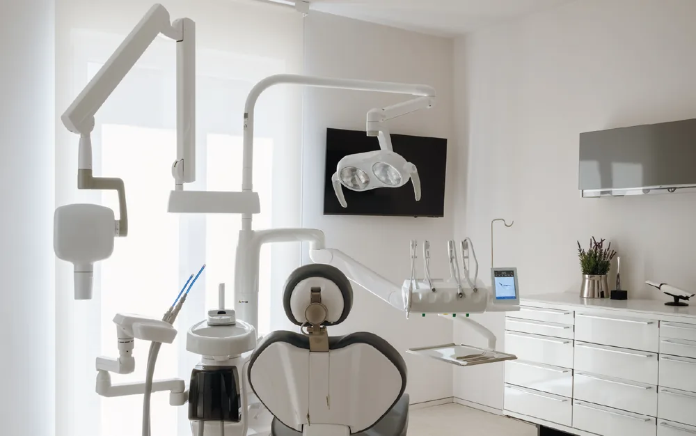
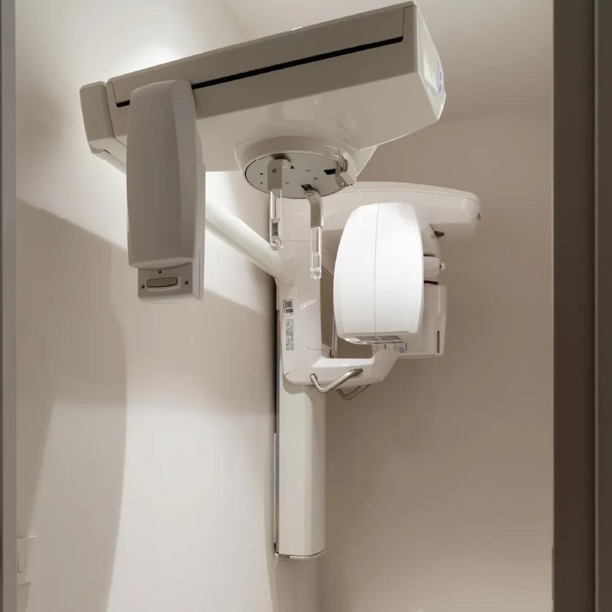

Le nostre tecnologie
Lo Studio Odontoiatrico Ciaramella è una struttura moderna ed all’avanguardia, dotata di tutte le più moderne tecnologie ed attrezzature per poter fornire ai propri paziente prestazioni di elevata qualità nella massima sicurezza.
Radiografia panoramica e teleradiografia del cranio
Presso il nostro studio è possibile eseguire tutti gli esami radiografici per la pianificazione delle terapie, con attrezzature digitali a bassissima emissione.
Tac 3D Cone Beam
La possibilità di effettuare esami tac in sede permette una programmazione precisa ed un accurato monitoraggio degli interventi di chirurgia orale, implantologia e rigenerazione ossea.
Scanner Intraorale Digitale
Grazie allo scanner intraorale è possibile prendere impronte e misurazioni intraorali senza l’uso di paste per impronta. Massima comodità per i pazienti, massima precisione per i lavori odontoiatrici grazie all’odontoiatria digitale.
Mectron Combi Touch – Soft Mode - Igiene orale senza dolore
Con la Tecnologia Soft Mode di Mectron l’igiene dentale diventa per i pazienti molto più comoda ed efficace. L’ablazione del tartaro e la profilassi dentale diventano procedure semplici e indolori. Meno fastidi, grandi benefici grazie alla prevenzione.
Progettazione digitale – Implantologia Computer Guidata
Grazie alle tecnologie presenti in studio, gli interventi chirurgici e di implantologia si avvalgono della progettazione digitale che permette risultati precisi e predicibili. Gli impianti dentali vengono inseriti in massimo confort e massima sicurezza.
Sala Sterilizzazione
La nostra sala sterilizzazione è dotata di apparecchiature di ultima generazione per processi di sterilizzazione accurati e massima sicurezza nello svolgimento delle attività dello studio. Chiedici di visitarla per vedere con i tuoi occhi come ci prendiamo cura degli strumenti di lavoro.